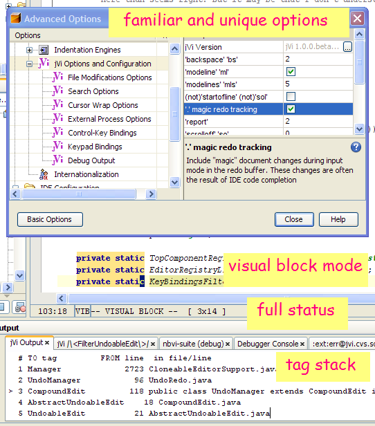

jVi - vi/vim editor clone
Welcome to the jVi home page. Currently this page has some random
thoughts/comments, serve as the user documentation and get you
to
DOWNLOAD jVi for NetBeans
and jVi for JBuilder download info.
There is information about
integrating jVi. Check out
Changes by release
for good overview of features available with jVi.
jVi is a port of a major chunk of vim to java. It is not like many IDE
keybindings where, for example, I often hear stuff like "its similar to emacs
but not the same".
jVi is the same, try visual mode or map commands or
:.,$s/([^ ]*) (.*$)/\2 \1/
(you can set options so you don't need to escape '(' and other
metacharacters in regular expressions) or
"*2d3w which deletes 6 words stashing them in the system
clipboard or y% or ... And, yes, "." works.
There is stuff missing, but if what's
there doesn't work like vi/vim then it's a bug (or a feature).

- marks, file-marks and yank buffers,
for example "ay'a.
These are persisted between sessions,
along with colon and search commands.
-
over 200 normal mode commands, operators and motions
- tag stack
- visual mode, including
detailed visual block mode help and 2D examples
aka RECTANGULAR EDIT)
-
text object selection
-
map commands for user defined key mappings
- 'wrap', 'linebreak' and 'list' options;
also horizontal scroll commands
- :set all and
several other :set commads
- substiute command with back references, there are options
to specify what meta characters need to be escaped, so you can enter
:.,$s/([^ ]*) (.*$)/\2 \1
- modeline processing; modeline
and modelines
options.
- Results of commands like :g/TextFilter/p
go into output window with hyperlinks to file.
- The bang commands: such as !{motion}{filter},
:{range}![!]{filter} [!][arg]
and of course :!{cmd}.
vim options shell,
shellcmdflag
and shellxquote
- = operator with equalprg
option. When equalprg empty, hook into platform
reindent.
And jVi has features not found in vim.
After a 5 year hiatus from Java, there's some personal projects I want to
 work on, 3D visualization of Sacred Geometry is one of them and there may be
some RCP. I wanted to use
an open source IDE, not JBuilder, and that means another port of jVi. I looked
at Eclipse, but the burden of SWT
was more than I would bear. Looking through some NetBeans mail archives
I was led to some work that Rich Unger did a few years ago to integrate jVi
into NetBeans; many thanks Rich. He
said he put it together in an evening; it was a good proof of concept, there
was vi behavior in the editor, but it was unusable for work. But that
starting point saved me countless hours. And now, with an editor I want to use,
I can start learning about NetBeans and get my personal projects going.
work on, 3D visualization of Sacred Geometry is one of them and there may be
some RCP. I wanted to use
an open source IDE, not JBuilder, and that means another port of jVi. I looked
at Eclipse, but the burden of SWT
was more than I would bear. Looking through some NetBeans mail archives
I was led to some work that Rich Unger did a few years ago to integrate jVi
into NetBeans; many thanks Rich. He
said he put it together in an evening; it was a good proof of concept, there
was vi behavior in the editor, but it was unusable for work. But that
starting point saved me countless hours. And now, with an editor I want to use,
I can start learning about NetBeans and get my personal projects going.
Check out
jVi in NetBeans
and
bugs and feature requests.
Share your opinions and comments at the
jVi Open Discussion Forum; if you use jVi, consider monitoring this Forum.
jVi is available for recent JBuilder releases, thanks to the efforts of
scribe777. There's jVi in JBuilder
documentation, including known defects.
There's jVi javadoc.
 jVi is hosted on on SourceForge and makes use of only some of the
facilities. This includes hosting this web site, the CVS source repository,
bug tracking and mailing lists.
jVi is hosted on on SourceForge and makes use of only some of the
facilities. This includes hosting this web site, the CVS source repository,
bug tracking and mailing lists.
Why jVi?
jVi is motivated by my frustration with the editors provided
by desktop apps, from mail readers to IDE's. The advent of java based
desktop apps, and the ability to extend them, makes it possible to put
together a vi which easily integrates into multiple disparate apps. A goal,
over time, is to make jVi fully functional with good performance. However
i believe there will always be performance limitations with jVi and expect to
continue using "native" editors for heavy duty tasks.
jVi is patterned after
vim.
 Vim is freely available charityware and running on a large number of
platforms, including for instance amiga and mac. Check out the site for
general vi pointers and documentation. jVi is a small subset of vim. Some
source code in jVi is taken from vim and modified to work in the java
environment. The user documentation is almost exclusively from vim, only
modified to remove things that are not applicable.
Vim is freely available charityware and running on a large number of
platforms, including for instance amiga and mac. Check out the site for
general vi pointers and documentation. jVi is a small subset of vim. Some
source code in jVi is taken from vim and modified to work in the java
environment. The user documentation is almost exclusively from vim, only
modified to remove things that are not applicable.
Support
Feedback is particularly wanted about
- bugs and anomolous behavior
- what "must have" vi and/or vim features are missing
- severe performance problems
- applications where jVi can be embedded
License Information
The source code for jVi is licensed under the
MOZILLA PUBLIC LICENSE.
See
The Open Source Page
and
Open Source Page's Approved Licenses for more information on Open Source licensing.
jVi for JBuilder Download
Enable Vi in JBuilder.
After installing the jar into JB's lib/ext directory, restart JBuilder.
On JBuilder's menu line, select "Tools|IDE Options". Select the
"Browser" tab. The "Keymap:" combo box should allow you to
select "VI". Also there is a "VI..." tab for some options
and there are also some vi options in the "Editor" tab.
jVi versions for JBuilder 2005, 2006 from a jVi user (Thanks to scribe777)
Version 0.7.1
Copyright © 2019 Ernie Rael
Contact jVi support